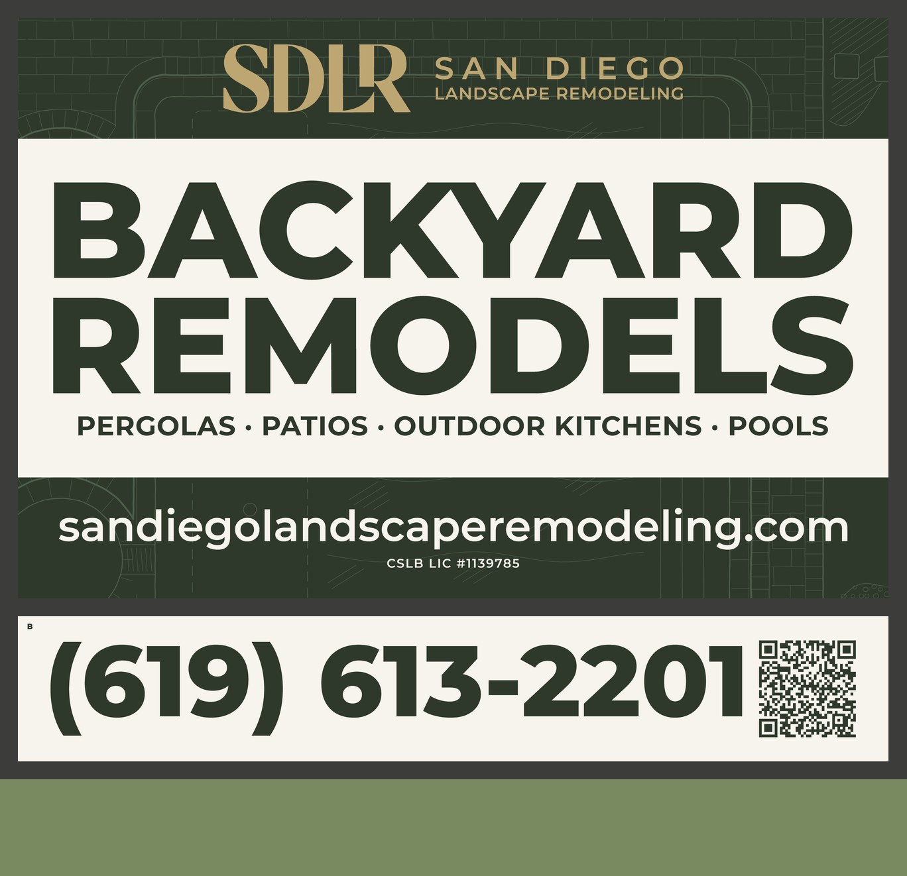
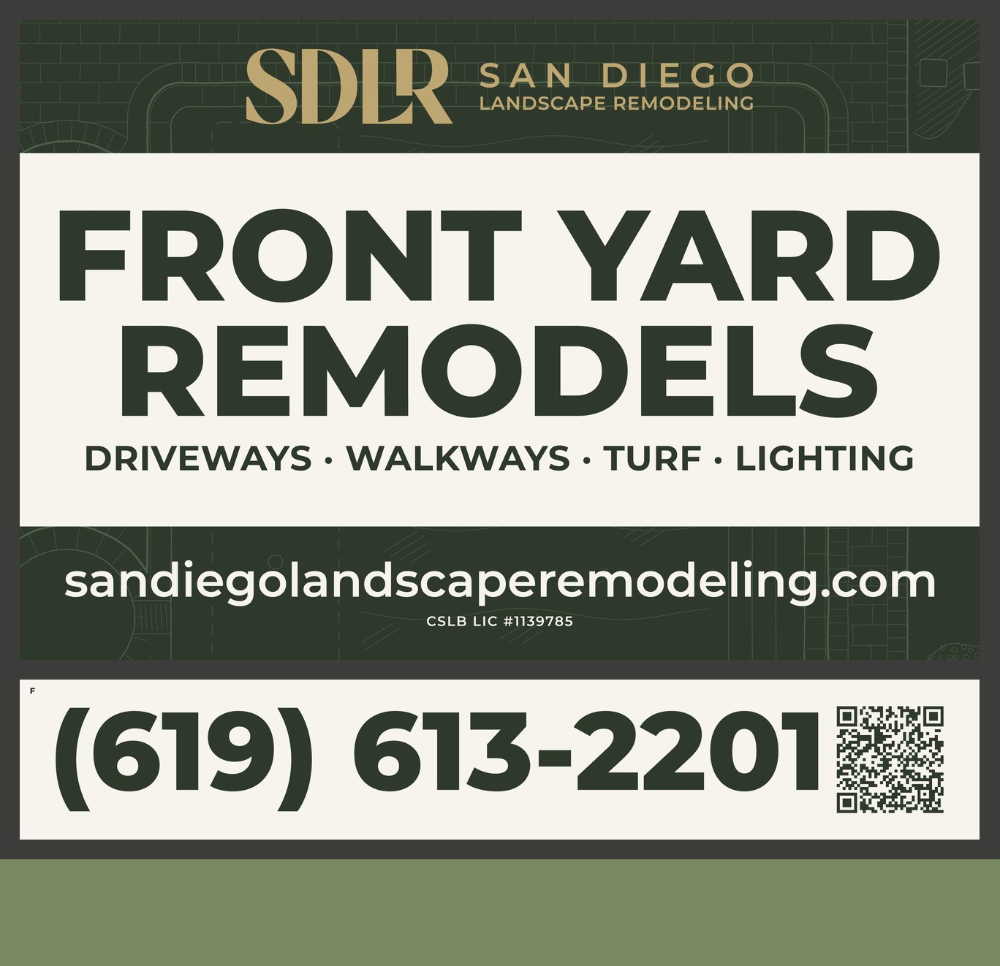
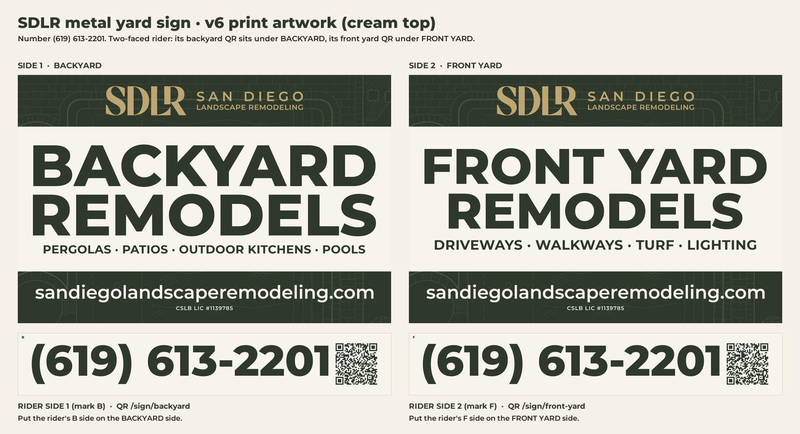
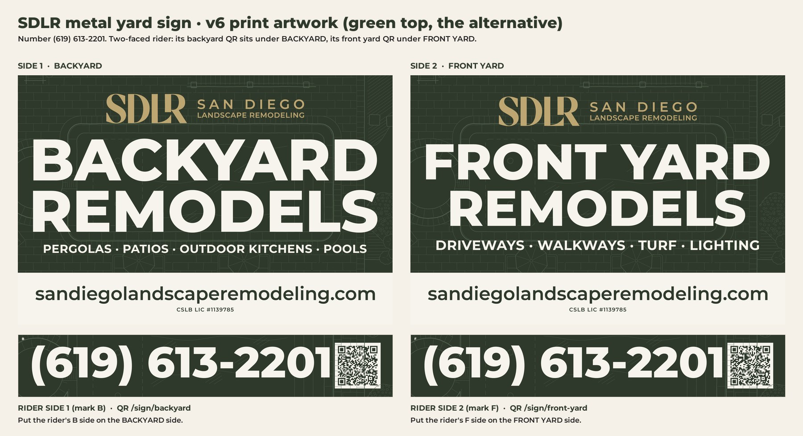

The rider now has different art on each face, like the panel. The face that sits under BACKYARD REMODELS has a QR to /sign/backyard, and the face under FRONT YARD REMODELS has a QR to /sign/front-yard. Both open the yard sign page, which is tracked separately from Google Ads and Facebook.
FinalPrint the cream panel and the cream rider below, both two-sided. Not ordered.


Tell the printer the rider is two-sided with different art on each face, both reading right side up.


Frame, print spec and prices are unchanged (Version 1). The layered Illustrator master (eight artboards) and the README are in Drive under
02 Clients/san-diego-landscape-remodeling/assets/print-ready/yard-signs/2026-11-23-36x24-metal-rider/print-files-v6/. Versions 1–5 are kept.